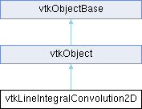

|
Etrek
|
|
Etrek
|
GPU-based implementation of Line Integral Convolution (LIC). More...
#include <vtkLineIntegralConvolution2D.h>

Public Member Functions | |
| vtkTypeMacro (vtkLineIntegralConvolution2D, vtkObject) | |
| void | PrintSelf (ostream &os, vtkIndent indent) override |
| vtkTextureObject * | Execute (vtkTextureObject *vectorTex, vtkTextureObject *noiseTex) |
| vtkTextureObject * | Execute (const int extent[4], vtkTextureObject *vectorTex, vtkTextureObject *noiseTex) |
| vtkTextureObject * | Execute (const vtkPixelExtent &inputTexExtent, const std::deque< vtkPixelExtent > &vectorExtent, const std::deque< vtkPixelExtent > &licExtent, vtkTextureObject *vectorTex, vtkTextureObject *maskVectorTex, vtkTextureObject *noiseTex) |
| virtual void | SetCommunicator (vtkPainterCommunicator *) |
| virtual vtkPainterCommunicator * | GetCommunicator () |
| virtual void | GetGlobalMinMax (vtkPainterCommunicator *, float &, float &) |
| virtual void | WriteTimerLog (const char *) |
| void | SetContext (vtkOpenGLRenderWindow *context) |
| vtkOpenGLRenderWindow * | GetContext () |
| vtkSetClampMacro (EnhancedLIC, int, 0, 1) | |
| vtkGetMacro (EnhancedLIC, int) | |
| vtkBooleanMacro (EnhancedLIC, int) | |
| vtkSetClampMacro (LowContrastEnhancementFactor, double, 0.0, 1.0) | |
| vtkGetMacro (LowContrastEnhancementFactor, double) | |
| vtkSetClampMacro (HighContrastEnhancementFactor, double, 0.0, 1.0) | |
| vtkGetMacro (HighContrastEnhancementFactor, double) | |
| vtkSetClampMacro (AntiAlias, int, 0, VTK_INT_MAX) | |
| vtkGetMacro (AntiAlias, int) | |
| vtkBooleanMacro (AntiAlias, int) | |
| vtkSetClampMacro (NumberOfSteps, int, 0, VTK_INT_MAX) | |
| vtkGetMacro (NumberOfSteps, int) | |
| vtkSetClampMacro (StepSize, double, 0.0, VTK_FLOAT_MAX) | |
| vtkGetMacro (StepSize, double) | |
| void | SetComponentIds (int c0, int c1) |
| void | SetComponentIds (int c[2]) |
| vtkGetVector2Macro (ComponentIds, int) | |
| vtkSetClampMacro (MaxNoiseValue, double, 0.0, 1.0) | |
| vtkGetMacro (MaxNoiseValue, double) | |
| void | SetTransformVectors (int val) |
| vtkGetMacro (TransformVectors, int) | |
| void | SetNormalizeVectors (int val) |
| vtkGetMacro (NormalizeVectors, int) | |
| vtkSetClampMacro (MaskThreshold, double, -1.0, VTK_FLOAT_MAX) | |
| vtkGetMacro (MaskThreshold, double) | |
| Public Member Functions inherited from vtkObject | |
| vtkBaseTypeMacro (vtkObject, vtkObjectBase) | |
| virtual void | DebugOn () |
| virtual void | DebugOff () |
| bool | GetDebug () |
| void | SetDebug (bool debugFlag) |
| virtual void | Modified () |
| virtual vtkMTimeType | GetMTime () |
| void | PrintSelf (ostream &os, vtkIndent indent) override |
| void | RemoveObserver (unsigned long tag) |
| void | RemoveObservers (unsigned long event) |
| void | RemoveObservers (const char *event) |
| void | RemoveAllObservers () |
| vtkTypeBool | HasObserver (unsigned long event) |
| vtkTypeBool | HasObserver (const char *event) |
| vtkTypeBool | InvokeEvent (unsigned long event) |
| vtkTypeBool | InvokeEvent (const char *event) |
| std::string | GetObjectDescription () const override |
| unsigned long | AddObserver (unsigned long event, vtkCommand *, float priority=0.0f) |
| unsigned long | AddObserver (const char *event, vtkCommand *, float priority=0.0f) |
| vtkCommand * | GetCommand (unsigned long tag) |
| void | RemoveObserver (vtkCommand *) |
| void | RemoveObservers (unsigned long event, vtkCommand *) |
| void | RemoveObservers (const char *event, vtkCommand *) |
| vtkTypeBool | HasObserver (unsigned long event, vtkCommand *) |
| vtkTypeBool | HasObserver (const char *event, vtkCommand *) |
| template<class U, class T> | |
| unsigned long | AddObserver (unsigned long event, U observer, void(T::*callback)(), float priority=0.0f) |
| template<class U, class T> | |
| unsigned long | AddObserver (unsigned long event, U observer, void(T::*callback)(vtkObject *, unsigned long, void *), float priority=0.0f) |
| template<class U, class T> | |
| unsigned long | AddObserver (unsigned long event, U observer, bool(T::*callback)(vtkObject *, unsigned long, void *), float priority=0.0f) |
| vtkTypeBool | InvokeEvent (unsigned long event, void *callData) |
| vtkTypeBool | InvokeEvent (const char *event, void *callData) |
| virtual void | SetObjectName (const std::string &objectName) |
| virtual std::string | GetObjectName () const |
| Public Member Functions inherited from vtkObjectBase | |
| const char * | GetClassName () const |
| virtual vtkTypeBool | IsA (const char *name) |
| virtual vtkIdType | GetNumberOfGenerationsFromBase (const char *name) |
| virtual void | Delete () |
| virtual void | FastDelete () |
| void | InitializeObjectBase () |
| void | Print (ostream &os) |
| void | Register (vtkObjectBase *o) |
| virtual void | UnRegister (vtkObjectBase *o) |
| int | GetReferenceCount () |
| void | SetReferenceCount (int) |
| bool | GetIsInMemkind () const |
| virtual void | PrintHeader (ostream &os, vtkIndent indent) |
| virtual void | PrintTrailer (ostream &os, vtkIndent indent) |
| virtual bool | UsesGarbageCollector () const |
Static Public Member Functions | |
| static vtkLineIntegralConvolution2D * | New () |
| static bool | IsSupported (vtkRenderWindow *renWin) |
| static void | SetVectorTexParameters (vtkTextureObject *vectors) |
| static void | SetNoiseTexParameters (vtkTextureObject *noise) |
| Static Public Member Functions inherited from vtkObject | |
| static vtkObject * | New () |
| static void | BreakOnError () |
| static void | SetGlobalWarningDisplay (vtkTypeBool val) |
| static void | GlobalWarningDisplayOn () |
| static void | GlobalWarningDisplayOff () |
| static vtkTypeBool | GetGlobalWarningDisplay () |
| Static Public Member Functions inherited from vtkObjectBase | |
| static vtkTypeBool | IsTypeOf (const char *name) |
| static vtkIdType | GetNumberOfGenerationsFromBaseType (const char *name) |
| static vtkObjectBase * | New () |
| static void | SetMemkindDirectory (const char *directoryname) |
| static bool | GetUsingMemkind () |
Protected Member Functions | |
| void | SetVTShader (vtkShaderProgram *prog) |
| void | SetLIC0Shader (vtkShaderProgram *prog) |
| void | SetLICIShader (vtkShaderProgram *prog) |
| void | SetLICNShader (vtkShaderProgram *prog) |
| void | SetEEShader (vtkShaderProgram *prog) |
| void | SetCEShader (vtkShaderProgram *prog) |
| void | SetAAHShader (vtkShaderProgram *prog) |
| void | SetAAVShader (vtkShaderProgram *prog) |
| void | BuildShaders () |
| void | RenderQuad (float computeBounds[4], vtkPixelExtent computeExtent) |
| vtkTextureObject * | AllocateBuffer (unsigned int texSize[2]) |
| void | SetNoise2TexParameters (vtkTextureObject *noise) |
| virtual void | StartTimerEvent (const char *) |
| virtual void | EndTimerEvent (const char *) |
| Protected Member Functions inherited from vtkObject | |
| void | RegisterInternal (vtkObjectBase *, vtkTypeBool check) override |
| void | UnRegisterInternal (vtkObjectBase *, vtkTypeBool check) override |
| void | InternalGrabFocus (vtkCommand *mouseEvents, vtkCommand *keypressEvents=nullptr) |
| void | InternalReleaseFocus () |
| Protected Member Functions inherited from vtkObjectBase | |
| virtual void | ReportReferences (vtkGarbageCollector *) |
| vtkObjectBase (const vtkObjectBase &) | |
| void | operator= (const vtkObjectBase &) |
Protected Attributes | |
| vtkPainterCommunicator * | Comm |
| vtkWeakPointer< vtkOpenGLRenderWindow > | Context |
| vtkOpenGLFramebufferObject * | FBO |
| int | ShadersNeedBuild |
| vtkOpenGLHelper * | FinalBlendProgram |
| vtkOpenGLHelper * | IntermediateBlendProgram |
| vtkOpenGLHelper * | VTShader |
| vtkOpenGLHelper * | LIC0Shader |
| vtkOpenGLHelper * | LICIShader |
| vtkOpenGLHelper * | LICNShader |
| vtkOpenGLHelper * | EEShader |
| vtkOpenGLHelper * | CEShader |
| vtkOpenGLHelper * | AAHShader |
| vtkOpenGLHelper * | AAVShader |
| int | NumberOfSteps |
| double | StepSize |
| int | EnhancedLIC |
| int | EnhanceContrast |
| double | LowContrastEnhancementFactor |
| double | HighContrastEnhancementFactor |
| int | AntiAlias |
| int | NoiseTextureLookupCompatibilityMode |
| double | MaskThreshold |
| int | TransformVectors |
| int | NormalizeVectors |
| int | ComponentIds [2] |
| double | MaxNoiseValue |
| Protected Attributes inherited from vtkObject | |
| bool | Debug |
| vtkTimeStamp | MTime |
| vtkSubjectHelper * | SubjectHelper |
| std::string | ObjectName |
| Protected Attributes inherited from vtkObjectBase | |
| std::atomic< int32_t > | ReferenceCount |
| vtkWeakPointerBase ** | WeakPointers |
| enum | { ENHANCE_CONTRAST_OFF = 0 , ENHANCE_CONTRAST_ON = 1 } |
| vtkSetClampMacro (EnhanceContrast, int, 0, 2) | |
| vtkGetMacro (EnhanceContrast, int) | |
| vtkBooleanMacro (EnhanceContrast, int) | |
Additional Inherited Members | |
| Static Protected Member Functions inherited from vtkObjectBase | |
| static vtkMallocingFunction | GetCurrentMallocFunction () |
| static vtkReallocingFunction | GetCurrentReallocFunction () |
| static vtkFreeingFunction | GetCurrentFreeFunction () |
| static vtkFreeingFunction | GetAlternateFreeFunction () |
GPU-based implementation of Line Integral Convolution (LIC).
This class resorts to GLSL to implement GPU-based Line Integral Convolution (LIC) for visualizing a 2D vector field that may be obtained by projecting an original 3D vector field onto a surface (such that the resulting 2D vector at each grid point on the surface is tangential to the local normal, as done in vtkSurfaceLICPainter).
As an image-based technique, 2D LIC works by (1) integrating a bidirectional streamline from the center of each pixel (of the LIC output image), (2) locating the pixels along / hit by this streamline as the correlated pixels of the starting pixel (seed point / pixel), (3) indexing a (usually white) noise texture (another input to LIC, in addition to the 2D vector field, usually with the same size as that of the 2D vector field) to determine the values (colors) of these pixels (the starting and the correlated pixels), typically through bi-linear interpolation, and (4) performing convolution (weighted averaging) on these values, by adopting a low-pass filter (such as box, ramp, and Hanning kernels), to obtain the result value (color) that is then assigned to the seed pixel.
The GLSL-based GPU implementation herein maps the aforementioned pipeline to fragment shaders and a box kernel is employed. Both the white noise and the vector field are provided to the GPU as texture objects (supported by the multi-texturing capability). In addition, there are four texture objects (color buffers) allocated to constitute two pairs that work in a ping-pong fashion, with one as the read buffers and the other as the write / render targets. Maintained by a frame buffer object (GL_EXT_framebuffer_object), each pair employs one buffer to store the current (dynamically updated) position (by means of the texture coordinate that keeps being warped by the underlying vector) of the (virtual) particle initially released from each fragment while using the bother buffer to store the current (dynamically updated too) accumulated texture value that each seed fragment (before the 'mesh' is warped) collects. Given NumberOfSteps integration steps in each direction, there are a total of (2 * NumberOfSteps + 1) fragments (including the seed fragment) are convolved and each contributes 1 / (2 * NumberOfSteps
One pass of LIC (basic LIC) tends to produce low-contrast / blurred images and vtkLineIntegralConvolution2D provides an option for creating enhanced LIC images. Enhanced LIC improves image quality by increasing inter-streamline contrast while suppressing artifacts. It performs two passes of LIC, with a 3x3 Laplacian high-pass filter in between that processes the output of pass #1 LIC and forwards the result as the input 'noise' to pass #2 LIC.
vtkLineIntegralConvolution2D applies masking to zero-vector fragments so that un-filtered white noise areas are made totally transparent by class vtkSurfaceLICPainter to show the underlying geometry surface.
The convolution process tends to decrease both contrast and dynamic range, sometimes leading to dull dark images. In order to counteract this, optional contrast ehnancement stages have been added. These increase the dynamic range and contrast and sharpen streaking patterns that emerge from the LIC process.
Under some circumstances, typically depending on the contrast and dynamic range and graininess of the noise texture, jagged or pixelated patterns emerge in the LIC. These can be reduced by enabling the optional anti-aliasing pass.
The internal pipeline is as follows, with optional stages denoted by () nested optional stages depend on their parent stage.
noise texture
|
[ LIC ((CE) HPF LIC) (AA) (CE) ]
| |
vector field LIC'd image
where LIC is the LIC stage, HPF is the high-pass filter stage, CE is the contrast ehnacement stage, and AA is the antialias stage.
| anonymous enum |
Enable/Disable contrast and dynamic range correction stages. Stage 1 is applied on the input to the high-pass filter when the high-pass filter is enabled and skipped otherwise. Stage 2, when enabled is the final stage in the internal pipeline. Both stages are implemented by a histogram stretching of the gray scale colors in the LIC'd image as follows:
c = (c-m)/(M-m)
where, c is the fragment color, m is the color value to map to 0, M is the color value to map to 1. The default values of m and M are the min and max over all fragments.
This increase the dynamic range and contrast in the LIC'd image, both of which are naturally attenuated by the LI convolution process.
ENHANCE_CONTRAST_OFF – don't enhance contrast ENHANCE_CONTRAST_ON – enhance high-pass input and final stage output
This feature is disabled by default.
| vtkTextureObject * vtkLineIntegralConvolution2D::Execute | ( | const int | extent[4], |
| vtkTextureObject * | vectorTex, | ||
| vtkTextureObject * | noiseTex ) |
Compute the lic on the indicated subset of the vector field texture.
| vtkTextureObject * vtkLineIntegralConvolution2D::Execute | ( | const vtkPixelExtent & | inputTexExtent, |
| const std::deque< vtkPixelExtent > & | vectorExtent, | ||
| const std::deque< vtkPixelExtent > & | licExtent, | ||
| vtkTextureObject * | vectorTex, | ||
| vtkTextureObject * | maskVectorTex, | ||
| vtkTextureObject * | noiseTex ) |
Compute LIC over the desired subset of the input texture. The result is copied into the desired subset of the provided output texture.
inputTexExtent : screen space extent of the input texture vectorExtent : part of the inpute extent that has valid vectors licExtent : part of the inpute extent to compute on outputTexExtent : screen space extent of the output texture outputExtent : part of the output texture to store the result
| vtkTextureObject * vtkLineIntegralConvolution2D::Execute | ( | vtkTextureObject * | vectorTex, |
| vtkTextureObject * | noiseTex ) |
Compute the lic on the entire vector field texture.
|
inlinevirtual |
For parallel operation, find global min/max min/max are in/out.
|
static |
Returns if the context supports the required extensions.
|
overridevirtual |
Methods invoked by print to print information about the object including superclasses. Typically not called by the user (use Print() instead) but used in the hierarchical print process to combine the output of several classes.
Reimplemented from vtkObjectBase.
|
inlinevirtual |
Set the communicator to use during parallel operation The communicator will not be duplicated or reference counted for performance reasons thus caller should hold/manage reference to the communicator during use of the LIC object.
| void vtkLineIntegralConvolution2D::SetComponentIds | ( | int | c0, |
| int | c1 ) |
If VectorField has >= 3 components, we must choose which 2 components form the (X, Y) components for the vector field. Must be in the range [0, 3].
| void vtkLineIntegralConvolution2D::SetContext | ( | vtkOpenGLRenderWindow * | context | ) |
Set/Get the rendering context. A reference is not explicitly held, thus reference to the context must be held externally.
|
protected |
Convenience functions to ensure that the input textures are configured correctly.
| void vtkLineIntegralConvolution2D::SetNormalizeVectors | ( | int | val | ) |
Set/Get the spacing in each dimension of the plane on which the vector field is defined. This class performs LIC in the normalized image space and hence generally it needs to transform the input vector field (given in physical space) to the normalized image space. The Spacing is needed to determine the transform. Default is (1.0, 1.0). It is possible to disable vector transformation by setting TransformVectors to 0. vtkSetVector2Macro(GridSpacings, double); vtkGetVector2Macro(GridSpacings, double); Normalize vectors during integration. When set(the default) the input vector field is normalized during integration, and each integration occurs over the same arclength. When not set each integration occurs over an arc length proportional to the field magnitude as is customary in traditional numerical methods. See, "Imaging Vector Fields Using Line Integral Convolution" for an axample where normalization is used. See, "Image Space Based Visualization of Unsteady Flow on Surfaces" for an example of where no normalization is used.
| void vtkLineIntegralConvolution2D::SetTransformVectors | ( | int | val | ) |
This class performs LIC in the normalized image space. Hence, by default it transforms the input vectors to the normalized image space (using the GridSpacings and input vector field dimensions). Set this to 0 to disable transformation if the vectors are already transformed.
|
static |
Convenience functions to ensure that the input textures are configured correctly.
|
inlineprotectedvirtual |
Methods used for parallel benchmarks. Use cmake to define vtkSurfaceLICPainterTIME to enable benchmarks. During each update timing information is stored, it can be written to disk by calling WriteLog (defined in vtkSurfaceLICPainter).
| vtkLineIntegralConvolution2D::vtkSetClampMacro | ( | AntiAlias | , |
| int | , | ||
| 0 | , | ||
| VTK_INT_MAX | ) |
Enable/Disable the anti-aliasing pass. This optional pass (disabled by default) can be enabled to reduce jagged patterns in the final LIC image. Values greater than 0 control the number of iterations, one is typically sufficient.
| vtkLineIntegralConvolution2D::vtkSetClampMacro | ( | EnhancedLIC | , |
| int | , | ||
| 0 | , | ||
| 1 | ) |
EnhancedLIC mean compute the LIC twice with the second pass using the edge-enhanced result of the first pass as a noise texture. Edge enhancedment is made by a simple Laplace convolution.
| vtkLineIntegralConvolution2D::vtkSetClampMacro | ( | LowContrastEnhancementFactor | , |
| double | , | ||
| 0. | 0, | ||
| 1. | 0 ) |
This feature is used to fine tune the contrast enhancement. Values are provided indicating the fraction of the range to adjust m and M by during contrast enahncement histogram stretching. M and m are the intensity/lightness values that map to 1 and 0. (see EnhanceContrast for an explanation of the mapping procedure). m and M are computed using the factors as follows:
m = min(C) - mFactor * (max(C) - min(C)) M = max(C) - MFactor * (max(C) - min(C))
the default values for mFactor and MFactor are 0 which result in m = min(C), M = max(C), where C is all of the colors in the image. Adjusting mFactor and MFactor above zero provide a means to control the saturation of normalization. These settings only affect the final normalization, the normalization that occurs on the input to the high-pass filter always uses the min and max.
| vtkLineIntegralConvolution2D::vtkSetClampMacro | ( | MaskThreshold | , |
| double | , | ||
| -1. | 0, | ||
| VTK_FLOAT_MAX | ) |
The MaskThreshold controls blanking of the LIC texture. For fragments with |V|<threshold the LIC fragment is not rendered. The default value is 0.0.
For surface LIC MaskThreshold units are in the original vector space. For image LIC be aware that while the vector field is transformed to image space while the mask threshold is not. Therefore the mask threshold must be specified in image space units.
| vtkLineIntegralConvolution2D::vtkSetClampMacro | ( | MaxNoiseValue | , |
| double | , | ||
| 0. | 0, | ||
| 1. | 0 ) |
| vtkLineIntegralConvolution2D::vtkSetClampMacro | ( | NumberOfSteps | , |
| int | , | ||
| 0 | , | ||
| VTK_INT_MAX | ) |
Number of streamline integration steps (initial value is 1). In term of visual quality, the greater (within some range) the better.
| vtkLineIntegralConvolution2D::vtkSetClampMacro | ( | StepSize | , |
| double | , | ||
| 0. | 0, | ||
| VTK_FLOAT_MAX | ) |
Get/Set the streamline integration step size (0.01 by default). This is the length of each step in normalized image space i.e. in range [0, FLOAT_MAX]. In term of visual quality, the smaller the better. The type for the interface is double as VTK interface is, but GPU only supports float. Thus it will be converted to float in the execution of the algorithm.
|
inlinevirtual |
Methods used for parallel benchmarks. Use cmake to define vtkLineIntegralConviolution2DTIME to enable benchmarks. During each update timing information is stored, it can be written to disk by calling WriteLog.